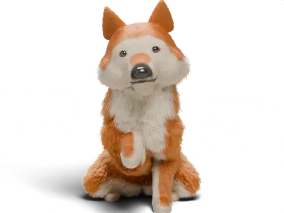
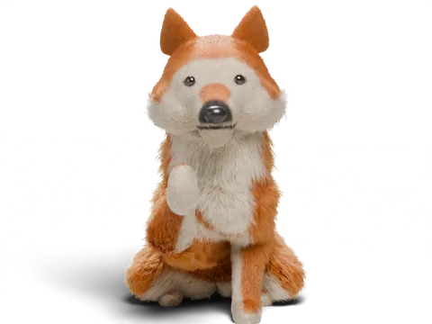
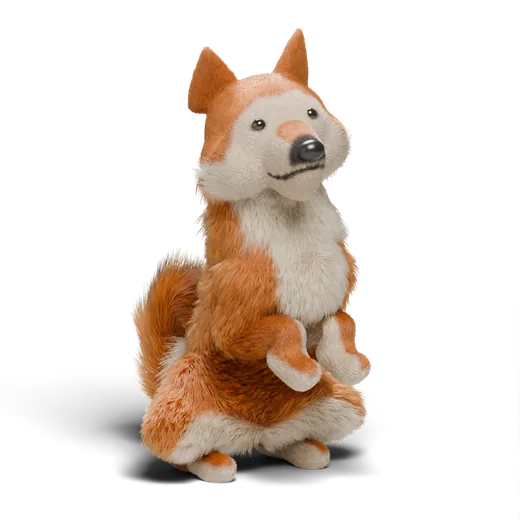
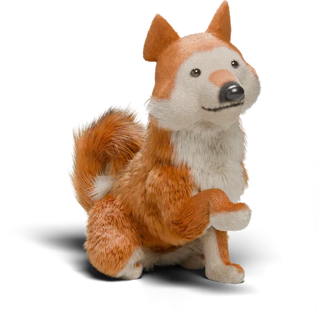
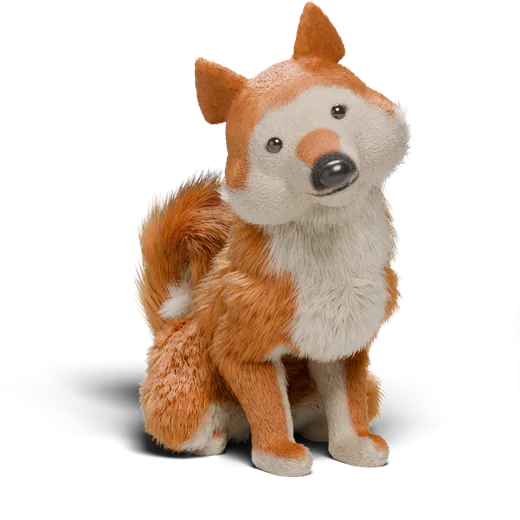
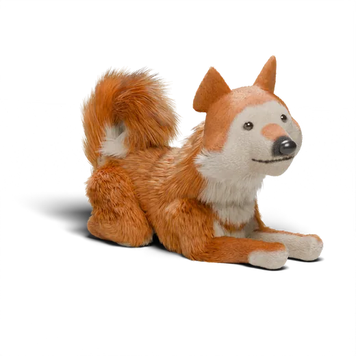

Sitspark: educare cuccioli e cani con calma
Educazione con il rinforzo positivo in brevi sessioni quotidiane, mostrata passo dopo passo da uno Shiba animato. La prima classe e la prima lezione di ogni classe sono gratuite. Senza account.
Scarica dall'App StoreiPhone con iOS 27. Android è in fase di test.


Perché scegliere Sitspark

La prima classe è gratis davvero
Nome, seduto e primo richiamo, più clicker, timer e progressi. Per sempre, non per tre giorni.

24,99 € all'anno, non 99
Oppure 6,99 € al mese. Nessun piano settimanale, nessuna pubblicità. Uno sviluppatore solo.

Senza account, IA privata
Nessuna registrazione. L'educatore IA funziona sul tuo iPhone: le tue domande non escono da lì.
Come funziona una lezione

Guarda lo Shiba
Ogni lezione è mostrata con un breve filmato del movimento, passo dopo passo.

Esercitati cinque minuti
La lettura a mani libere dice ogni passo ad alta voce mentre fai clic e premi.

Guarda i progressi
Ogni abilità passa da In apprendimento ad Affidabile a Padroneggiata, con promemoria gentili.
Cosa c'è dentro
- 9 classi e 46 lezioni, da nome e seduto a richiamo, passeggiata al guinzaglio e trucchi
- Un clicker rapido, la lettura dei passi a mani libere, il registro bisognini e il monitor dell'abbaio
- Consigli per nove gruppi di razze
- Plus: un educatore IA privato e piani di 7 giorni che funzionano sul tuo dispositivo
Guide per chi ha un cucciolo

Il cucciolo morde le mani: un piano di 3 giorni
Perché i cuccioli mordono mani e vestiti, e una routine tranquilla e senza punizioni che funziona in pochi giorni.
Leggi la guida →
Insegnare i bisogni al cucciolo: orari per età
Ogni quanto portare fuori un cucciolo a 8, 12 e 16 settimane, e cosa fare quando sporca in casa.
Leggi la guida →
La prima notte del cucciolo: trasportino, pianto e sonno
Come organizzare la prima notte con un cucciolo, cosa fare quando piange e come abituarlo al trasportino con dolcezza.
Leggi la guida →
Il cane tira al guinzaglio: come smettere
Un metodo senza coercizione per insegnare a camminare con il guinzaglio morbido: perché il cane tira e la routine che lo cambia.
Leggi la guida →
Insegnare il richiamo al cane
Come costruire un richiamo affidabile con una parola speciale, premi ottimi e una lunghina.
Leggi la guida →Abituare il cucciolo al trasportino (kennel), passo dopo passo
Come fare del trasportino un posto che il cucciolo sceglie, e quanto tempo può restarci.
Leggi la guida →Inizia stasera
La prima classe richiede cinque minuti al giorno. La prima classe e la prima lezione di ogni classe sono gratuite, senza account.
Scarica dall'App Store